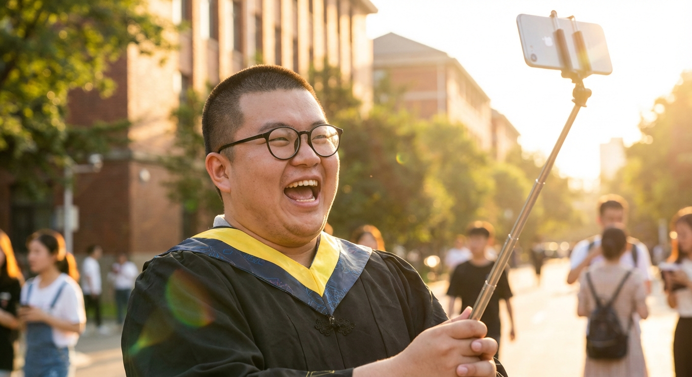
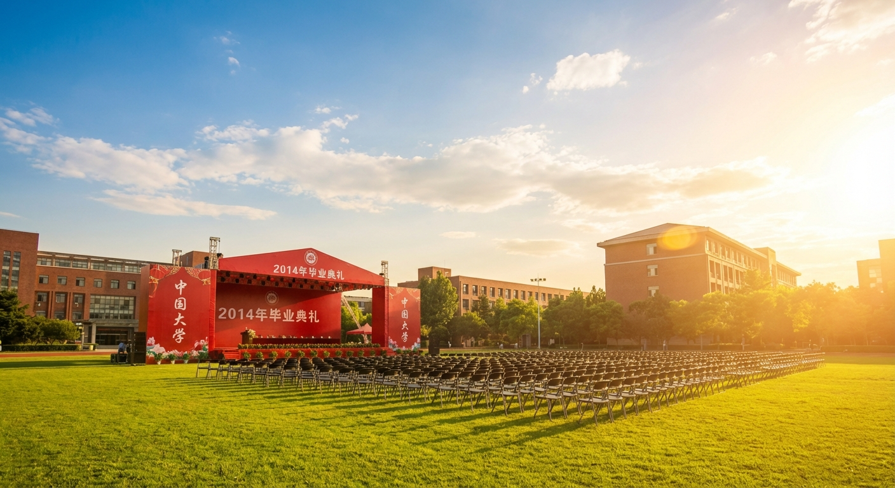

EXP-1068 | V6.1 分镜剧本 | 都市重生爽文


[陈默]趴倒在会议桌上右手抓紧胸口，眉头紧锁嘴唇发白，散落的破产文件从桌边滑落。
[陈默]内心独白："操…十年创业，就这么完了？"
[陈默]猛地睁开双眼瞳孔骤缩，发现自己穿着学士服站在阳光刺眼的大学操场上，左手下意识摸向胸口表情震惊。
[陈默]说："我…没死？"
[老刘]从右侧伸手拍陈默左肩，圆胖脸上挤出夸张笑容露出牙龈。
[老刘]说："默哥你发什么呆，校长都念到咱班了！"
[陈默]低头看向左手中的iPhone 5s屏幕，眉毛先是上扬然后缓缓压下，嘴角从惊讶弧度变成克制的上扬，瞳孔中倒映手机光。
[陈默]说："三千二…够了。"
[陈默]从学士服口袋掏出折叠的节目单翻到背面，右手握笔飞速书写，眉头微皱嘴唇无声蠕动。
[陈默]内心独白："2014年6月…微信红包还没上线…滴滴刚拿到B轮…拼多多还不存在…"
[老刘]好奇地从右侧探头凑近，圆眼镜滑到鼻尖，眯眼看纸上的字。
[老刘]说："你写什么呢？毕业感言？"
[陈默]说："老刘，借我三千块。"
[老刘]瞪大眼睛嘴巴张成O型后退半步，双手在胸前交叉摆手。
[老刘]说："哥，毕业了别借钱行不行！"
[陈默]端坐不动目光从左向右缓缓扫过操场上的同学们，眼神带着十年创业老兵的锐利，眉心微微收紧下颌微抬。
[陈默]内心独白："移动互联网红利窗口——18个月。上辈子我错过了，这辈子…"
[陈默]深吸一口气挺直腰背站起身来，逆光中轮廓被金色阳光勾勒，低头看向右侧的老刘露出自信笑容牙齿微露。
[陈默]说："老刘，今天散伙饭你请客。"
[老刘]双手叉腰仰头瞪眼嘴角下撇一脸不服。
[老刘]说："凭什么！"
[陈默]右手拍上老刘肩膀微微用力，目光越过老刘看向远方的校门。
[陈默]说："因为三个月后，我请你吃满汉全席。"
[老刘]翻白眼双手摊开无奈摇头。
[老刘]说："创业脑又犯了…"
📄 Markdown 原文 · 🔍 质量检查报告